Roofing & home improvement · Newark, NJ 07107
From the roof line to the front step.
N.A.W. Home Improvement works on the outside of Newark houses: roofs, siding, front steps and railings, and the trim that frames it all. Call or text, and say what the house needs.
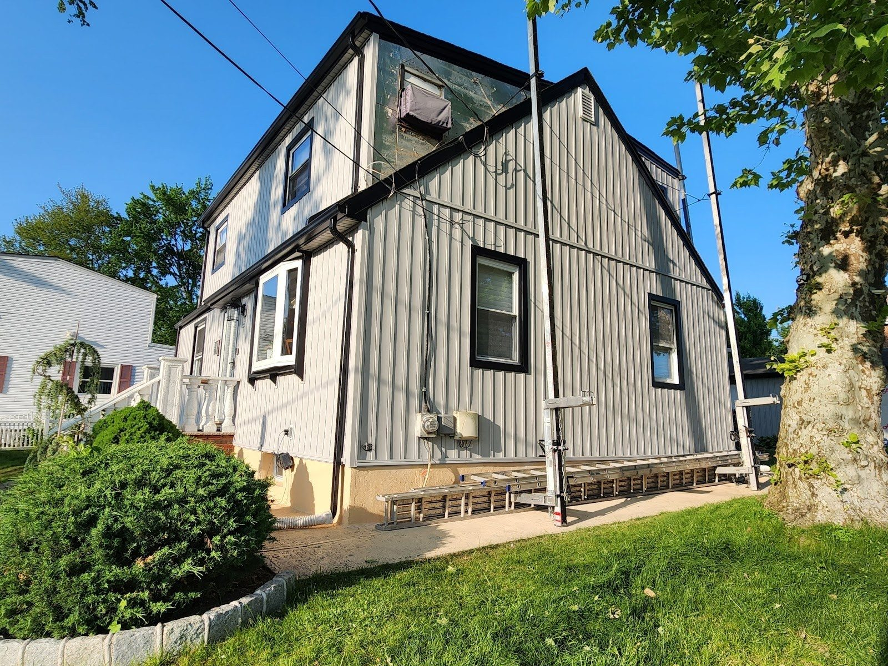
Panel I · the work
Four panels of the house.
Like a pressed-tin ceiling, a house is made of panels that have to meet cleanly. Press a panel to see that part of the work.
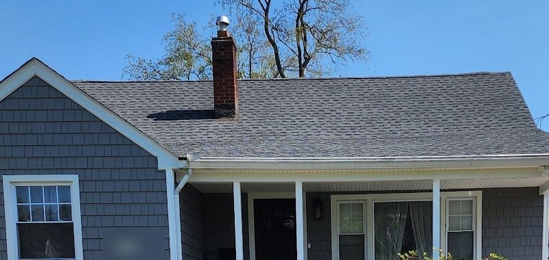
Panel 01 · N.A.W. job photo
Roofing
Roofing is the shingles, the flashing and the layers under them that keep rain and snow out. You need it when shingles are missing or curling, or a top-floor ceiling shows a new stain.
- Shingle roofs
- Flashing at chimneys and walls
- Edges, vents and roof lines
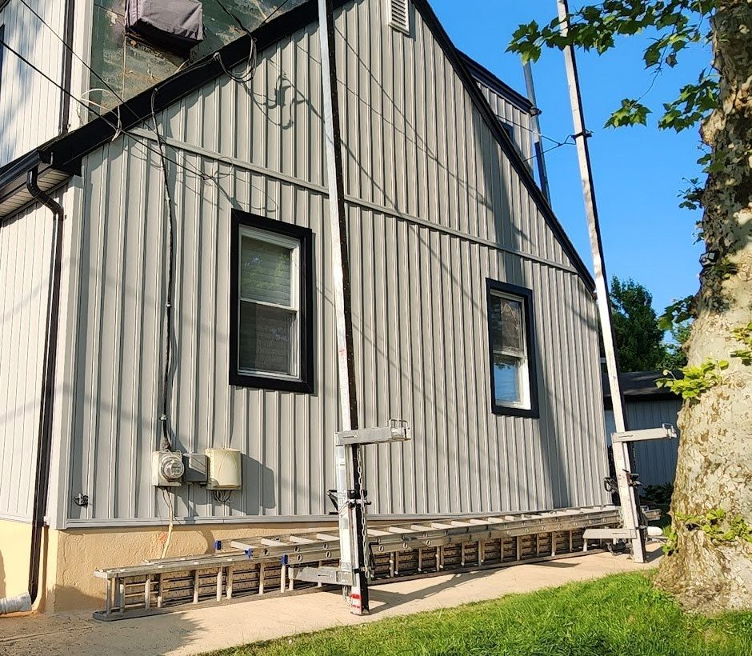
Panel 02 · N.A.W. job photo
Siding
Siding is the outer skin of the walls: horizontal, shake-style or vertical panels that shed rain and set the look of the whole house from the street.
- Horizontal vinyl siding
- Shake-style siding
- Vertical board-and-batten panels
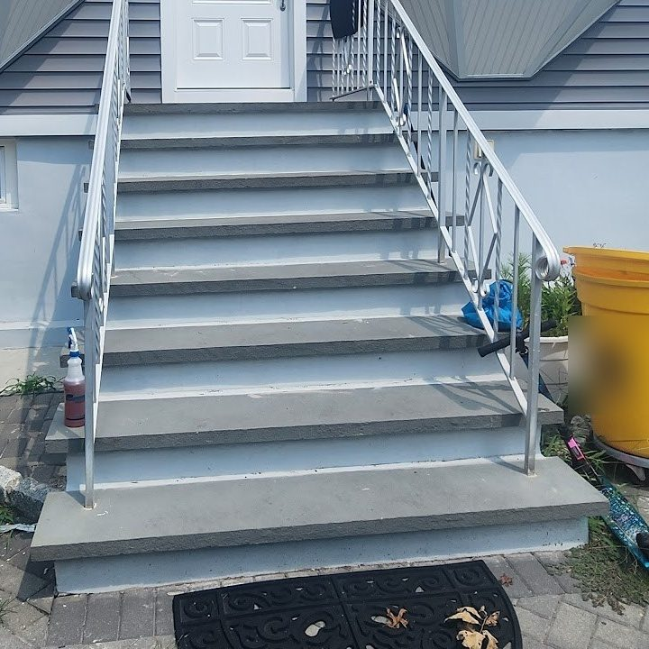
Panel 03 · N.A.W. job photo
Steps & railings
Front steps and railings are the first thing anyone touches: treads, risers and rails that feel solid underfoot and suit the house they lead into.
- Front steps and treads
- Metal railings
- Entry landings
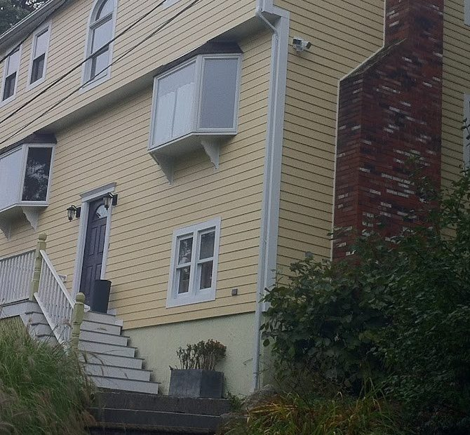
Panel 04 · N.A.W. job photo
Trim & exterior details
Trim is the finish around windows, doors, eaves and corners. Wrapped and sealed, it keeps water out of the joints and frames the whole front of the house.
- Window and door trim
- Bay window wraps
- Corners, eaves and fascia
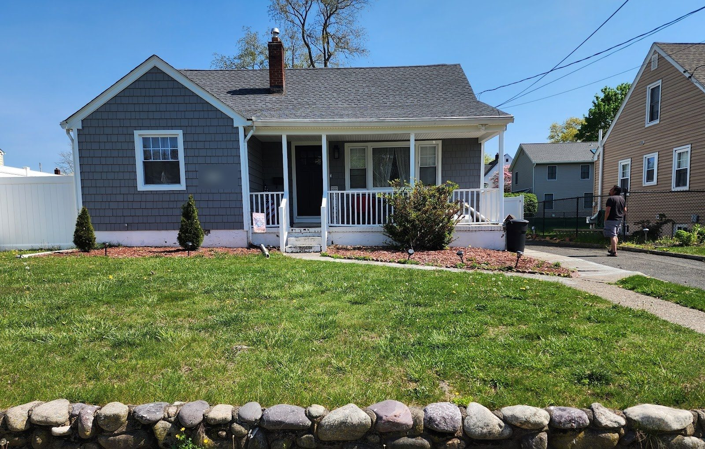
From the sidewalk
Shake siding, white porch rails, a clean roof line.
N.A.W. job photo
Panel II · useful
After a storm, check from the ground.
Five checks any homeowner can do after a nor’easter or a windy night. Press each panel as you go. Never climb onto the roof yourself.
0 of 5 checked
Panel III · job photos
On the block.
Houses from N.A.W. jobs, framed like the medallions on an old tin ceiling. Tap one to see it full size.
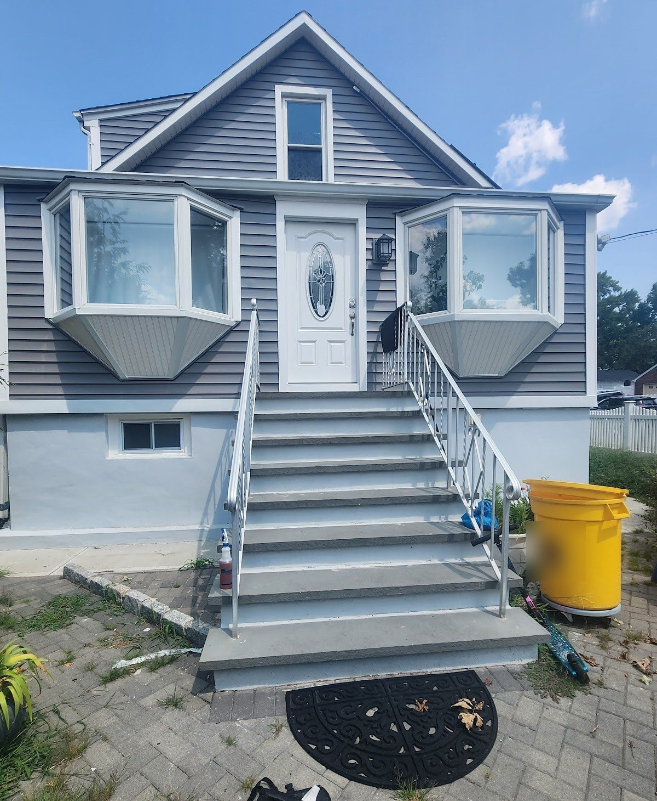
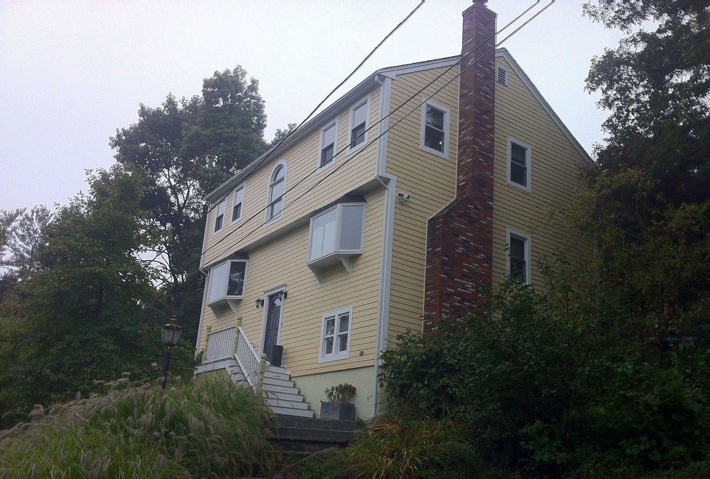
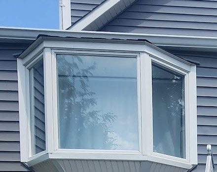
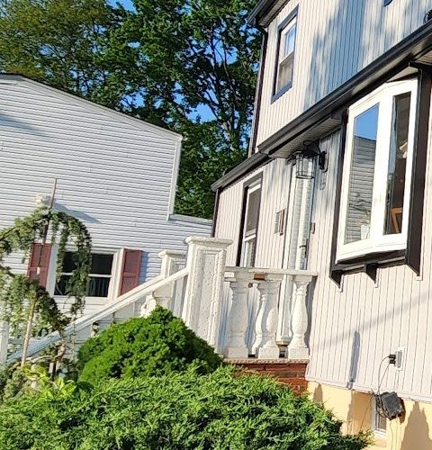
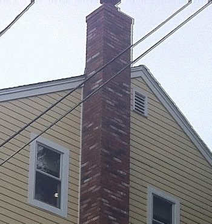
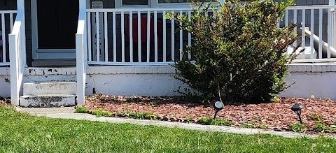
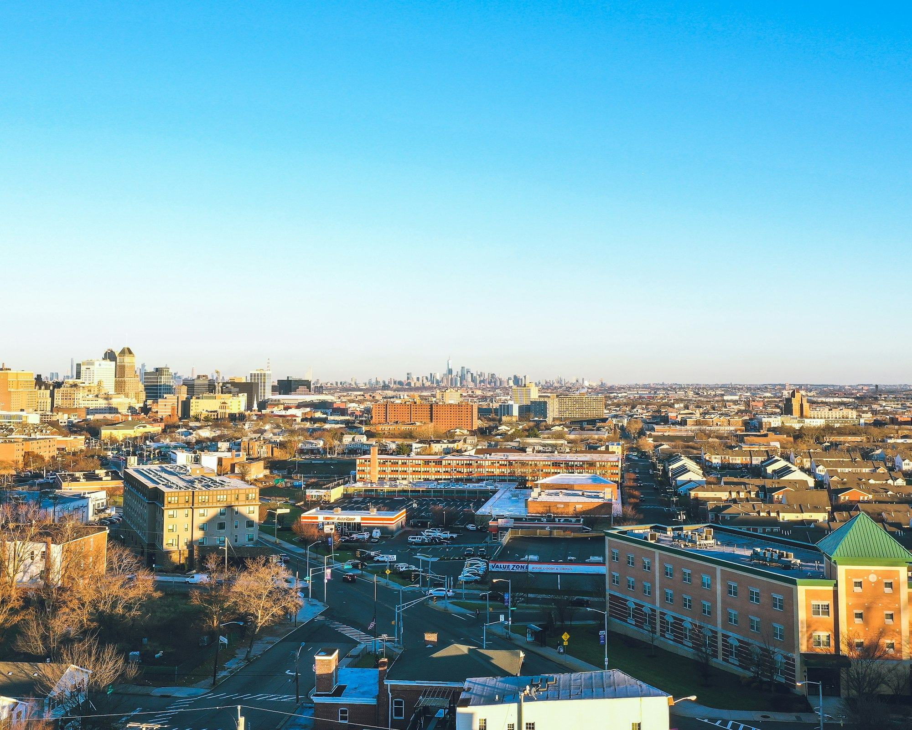
Roofing & home improvement
in Newark, NJ 07107
Illustrative stock photo · Emmanuel Ogbonnaya / Unsplash
Panel IV · call or text
Tell N.A.W. about the house.
(973) 710-5719N.A.W. Home Improvement
- Call(973) 710-5719
- Text(973) 710-5719
- Emailn.a.w.homeimprovement@
gmail.com - Based inNewark, NJ 07107
- FacebookN.A.W. on Facebook